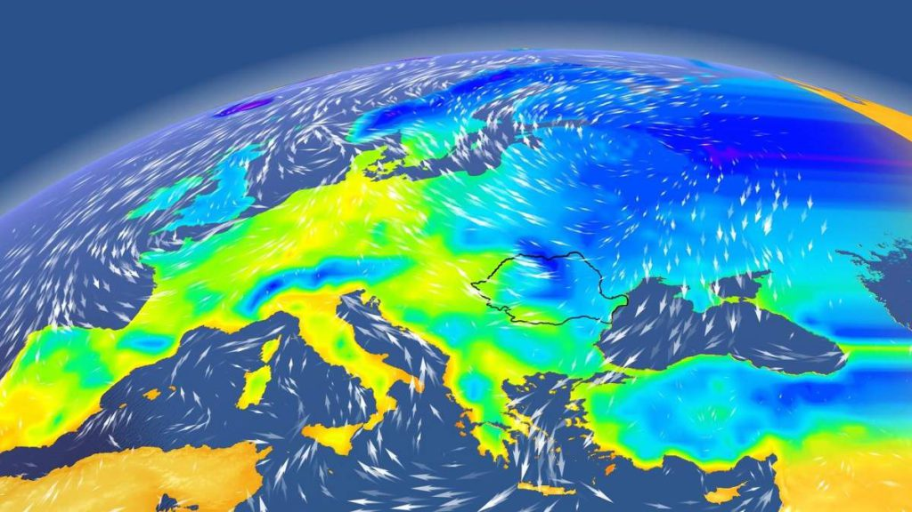

Clima Europei
Lista ordonata + neordonata
- Factori Genetici
- Factorii radiativi
- Factorii fizico-geografici
- Miscarile Pamantului
- Suprafetele active ale apelor oceanice
- Suprafetele active ale apelor marine
- Suprafata continentala
- Relieful
- presiunea atmosferică scade odată cu creşterea altitudinii
- scăderea temperaturii aerului în raport cu înălţimea
- creşterea cantitativă a precipitaţiilor, la altitudini ridicate, fiind dominant sub formă de zăpadă
- fluxul radiaţiei solare descreşte tot cu creşterea altitudinii datorită opacităţii atmosferei
- Factorii dinamici
- Factorii antropici
- Regionarea climatica a Europei
Lista de definitii
Ramuri ale geografiei
- Geografie fizica
- este o Știință a Pământului care se ocupă cu studiul Pământului și a mediului său natural folosind metode fizice și biologice
- ea încearcă să înțeleagă litosfera, hidrosfera, atmosfera, geosfera și flora și fauna pământului
- Geografia matematică
- este o ramură a geografiei ce studiază reprezentare matematică a suprafeței pământului și relația sa cu luna și soarele
- Geografie umană
- este o ramură a geografiei ce studiază procesele ce au loc atunci când omul interacționează cu mediul inconjurător
- ea studiază îndeosebi aspectele umane, politice, culturale, sociale și economice
Link-uri externe
Link catre facebook
Trimite mail catre Olteanu Octavian
Curiozitati despre Islanda
Plaja Islanda
